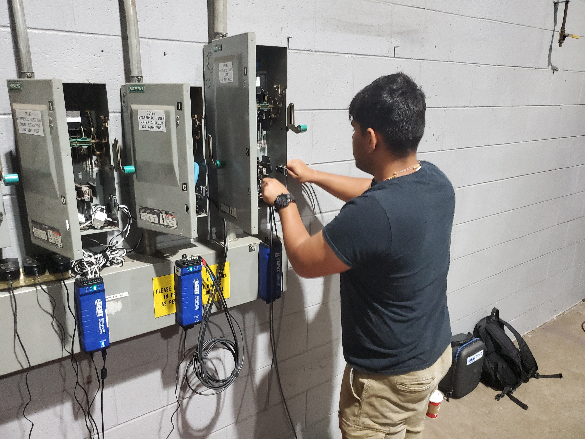
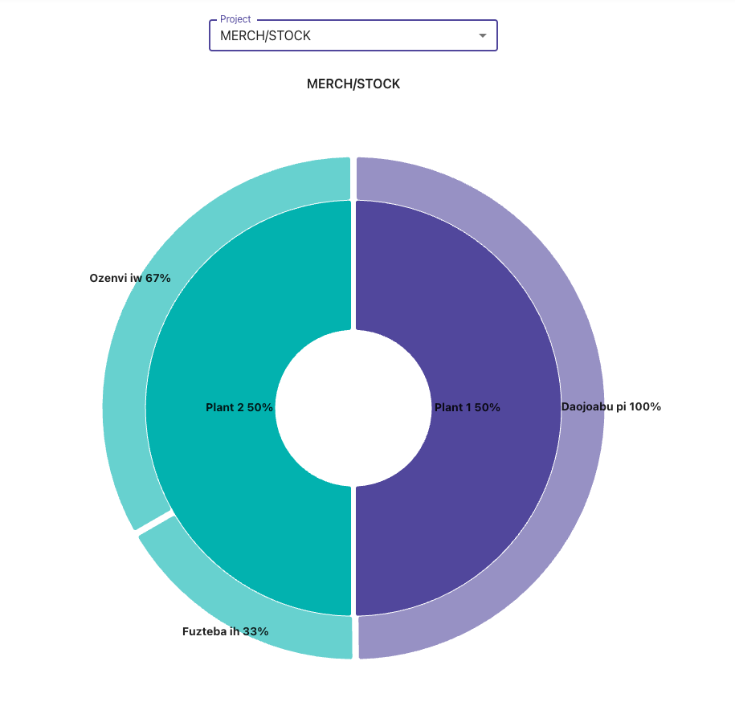
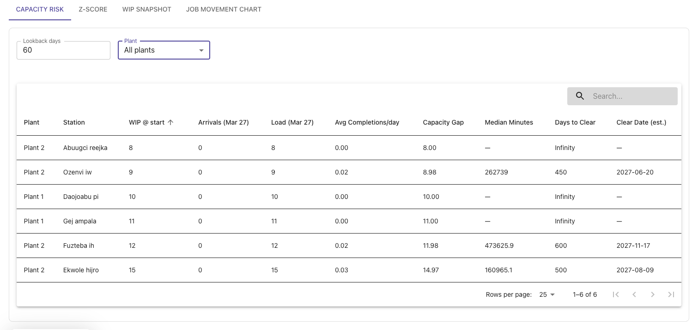
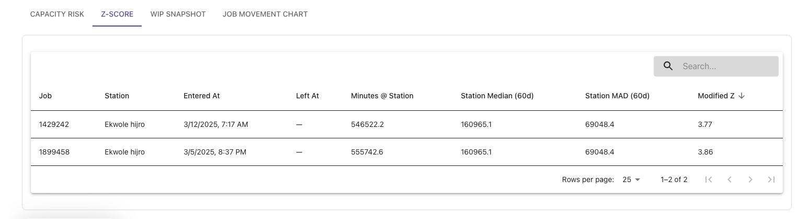

Digital Transformation at Daifuku Manufacturing Canada
A two-phase Industry 4.0 collaboration between Mohawk College EPIC and Daifuku Manufacturing Canada Corporation — giving a 70-year-old factory floor real-time visibility into itself for the first time.

Daifuku Manufacturing Canada Corporation builds custom material handling systems — conveyors, automated guided vehicles, and assembly-line equipment — for the automotive, airport, and industrial sectors. Their Hamilton plant runs more than 20 simultaneous production cells, with equipment spanning from cutting-edge robotics to machinery from the 1950s. For all of it, production tracking was manual. Nobody could see, in real time, where a job was, how long it had been sitting, or how much energy any of it was consuming.
Beginning in 2023, Daifuku and Mohawk College EPIC embarked on a two-phase digital transformation spanning over two years. Phase 1 connected the plant floor to the cloud — IoT sensors, energy submetering, RFID work-order tracking, and a full carbon emissions assessment. Phase 2 turned that data into intelligence: live management dashboards, anomaly detection, Cobot integration, and a metrics pipeline built directly with the people who use it.
The result is a data-driven manufacturer with a scalable digital infrastructure it fully owns — and a platform it has since begun offering commercially to other manufacturers.
Daifuku first approached EPIC about energy costs. As the collaboration developed, a broader picture emerged:
- No visibility into the plant floor. With 20+ production cells running simultaneously, managers had no real-time view of where jobs were, how long equipment had been running, or where time was being lost.
- Energy was a black box. There was no way to see which equipment was drawing the most power or to shut down strategically during peak periods to reduce demand charges.
- Onboarding new clients took three weeks. All production setup was manual — a direct drag on Daifuku's capacity to take on new work.
- Corporate was asking about carbon. Daifuku's parent company had mandated that all plants track and reduce their GHG emissions. The Hamilton facility had no baseline and no tools to start.
EPIC deployed IoT sensors and data acquisition hardware across the entire facility — connecting everything from modern robotics to 1950s-era machinery to a unified cloud platform built on AWS. The system monitors equipment status, energy draw, and production flow in real time, and uses RFID tags to track every work order as it moves between cells. A cloud-hosted analytics dashboard surfaces performance KPIs across the plant.
Alongside the IoT work, EPIC's Low Carbon Readiness Program conducted a full Scope 1, 2, and 3 GHG emissions assessment of the Hamilton facility — calculating the carbon footprint across energy use, transportation, waste, and the products Daifuku sells. Daifuku now has a quantified baseline, tracking tools, and a set of reduction recommendations they can act on independently.
The GHG assessment established a verified emissions baseline — 352.7 tCO₂e Scope 1, 26.5 tCO₂e Scope 2, and 4,224 tCO₂e across four Scope 3 categories — and delivered calculators and tracking templates Daifuku can use on an ongoing basis.
Phase 1 connected the plant. Phase 2 answered the question: now that we have all this data, what should managers actually see? EPIC worked directly with Daifuku's operations team to identify the metrics that matter — not in a workshop, but through an iterative analytics pipeline that let both sides explore production data together until the right questions emerged.
The outputs were built into a live reporting page inside the existing platform: a real-time view of where every work order sits across all 20+ cells, job flow in and out of each station, capacity pressure by due date, and anomaly detection that flags cells where jobs have been sitting too long. Alongside that, EPIC delivered Cobot integration improvements, an on-device barcode scanner to automatically log work orders at the point of execution, and a web-based document manager for work order files accessible from anywhere on the plant network.
Live job distribution across the plant
At a glance, managers can see how work is distributed across the facility — which plants are carrying the load and where jobs are concentrating.

Live job distribution by plant, surfaced in the Phase 2 management reporting dashboard.
Capacity risk before it becomes a crisis
One of the most useful metrics developed in the analytics pipeline is capacity risk: how many jobs share a common due date, and how many days it would take to clear them at current throughput. It gives managers a lead indicator of scheduling pressure, not just a record of what went wrong.

Capacity risk view: jobs with shared due dates vs. estimated days to clear at current throughput.
Anomaly detection on the plant floor
For each production cell, the platform tracks how long jobs typically spend there. Using a modified Z-Score approach, it flags cells where dwell time has become statistically abnormal — an early warning that something has stalled, before it shows up in missed deadlines.

Z-score anomaly detection flags production cells where jobs are staying significantly longer than normal.
- Daifuku's plant floor is fully visible in real time for the first time — equipment status, work order locations, energy draw, and production flow across all cells.
- Client onboarding time dropped from three weeks to less than one day, directly improving service capacity and competitiveness.
- The platform is now a commercial product. Daifuku is offering it to other manufacturers, creating a revenue stream that didn't exist before the collaboration.
- A verified, quantified carbon footprint — Scope 1, 2, and 3 — puts the Hamilton plant in good standing with Daifuku's corporate sustainability requirements and gives them the tools to track and reduce emissions independently.
- Management now has lead indicators, not just lagging records: capacity pressure, cell anomalies, and job flow are surfaced before they become problems.
- Full IP ownership means Daifuku can extend, adapt, and commercialize the platform without dependency on EPIC or any other external party.
| Team Member | Role |
|---|---|
| Dr. Mariano Arriaga | General Manager — strategic direction and technical oversight across both phases. |
| Erica Daly | Project Manager (Phase 2) — partner engagement, deliverable coordination, and reporting. |
| Gord Bond | Software Solutions Architect — cloud platform architecture, full-stack development, analytics pipeline (both phases). |
| Rutul Bhavsar | Hardware & Industrial Systems — IoT deployment, Cobot integration, work-order document manager (both phases). |
| Shefaza Esmail | R&D Lead, Low Carbon Readiness — GHG emissions assessment, Scope 1–3 quantification and reduction recommendations (Phase 1). |
| Lamar Webb | Hardware Integration — barcode scanner and Cobot firmware integration, SMS platform development (Phase 2). |
| Pal Patel | Cloud Platform Developer — backend systems, frontend interfaces, and workflow automation (Phase 2). |